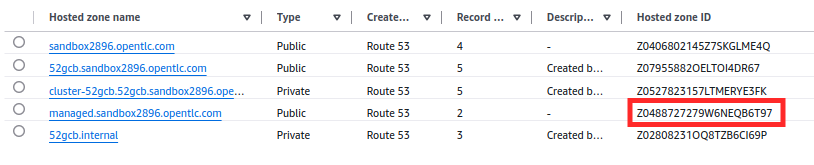

Setting Up DNS and TLS for Gateway API
This lab covers the steps to configure DNS and TLS for the Gateway API, including setting up AWS credentials, creating necessary Kubernetes secrets, and configuring Let’s Encrypt for secure communication through TLS certificates.
-
Create a namespace for the API Gateway, which will be used for organizing and managing the resources.
oc create ns api-gatewayYou should see the output as follows:
namespace/api-gateway created -
Create a secret named aws-credentials to store the AWS credentials (AWS_ACCESS_KEY_ID and AWS_SECRET_ACCESS_KEY) that Connectivity Link can use to authenticate and manage DNS configurations in AWS Route 53.
oc -n api-gateway create secret generic aws-credentials \ --type=kuadrant.io/aws \ --from-literal=AWS_ACCESS_KEY_ID=$AWS_ACCESS_KEY_ID \ --from-literal=AWS_SECRET_ACCESS_KEY=$AWS_SECRET_ACCESS_KEY
You should see the output as follows:
secret/aws-credentials created -
Add a TLS issuer
-
To secure communication with the Gateways, define Let’s Encrypt TLS issuer for generating TLS certificates by executing command:
oc apply -f -<<EOF apiVersion: cert-manager.io/v1 kind: ClusterIssuer metadata: name: lets-encrypt spec: acme: email: <Your-mail-id> privateKeySecretRef: name: le-secret server: https://acme-v02.api.letsencrypt.org/directory solvers: - dns01: route53: hostedZoneID: <Hosted-zone-id> region: <AWS-Region> accessKeyIDSecretRef: key: AWS_ACCESS_KEY_ID name: aws-credentials secretAccessKeySecretRef: key: AWS_SECRET_ACCESS_KEY name: aws-credentials EOFSubstitute the value for below with your actual environment values:
-
<Your-mail-id> : Substitute with an actual mail id.
-
<AWS-Region> : Substitute with your aws region value.
-
<Hosted-zone-id> : Replace this with the hosted zone managed.sandboxXXXX.opentlc.com from AWS you created earlier.
You should see the output as follows:
clusterissuer.cert-manager.io/lets-encrypt createdIn this training, we are using Let’s Encrypt, but any cert-manager-supported issuer can be used. -
Wait for the ClusterIssuer to become ready as follows:
oc wait clusterissuer/lets-encrypt --for=condition=ready=trueYou should see the output as follows:
clusterissuer.cert-manager.io/lets-encrypt condition met
-
-
Set up a Gateway
-
To enable Kuadrant to balance traffic across two or more clusters using DNS, you need to define a Gateway with a shared host. Run the following command to apply the Gateway configuration, to create the external Gateway needed for DNS-based traffic balancing.
oc apply -f -<<EOF apiVersion: gateway.networking.k8s.io/v1 kind: Gateway metadata: name: external namespace: api-gateway labels: kuadrant.io/gateway: "true" spec: gatewayClassName: istio listeners: - allowedRoutes: namespaces: from: Same hostname: "*.managed.<sandboxXXXX.opentlc.com>" name: api port: 443 protocol: HTTPS tls: certificateRefs: - group: "" kind: Secret name: api-external-tls mode: Terminate EOFSubstitute the <sandboxXXXX.opentlc.com> with the value as per your environment.
You should see the output as follows:
gateway.gateway.networking.k8s.io/external created -
Check the status of your Gateway as follows:
oc get gateway external -n api-gateway -o=jsonpath='{.status.conditions[?(@.type=="Accepted")].message}'You should see the output as follows:
Resource accepted -
Check whether your Gateway is accepted and programmed (valid and assigned an external address) as follows:
oc get gateway external -n api-gateway -o=jsonpath='{.status.conditions[?(@.type=="Programmed")].message}'You should see the output as follows:
Resource programmed, assigned to service(s) external-istio.api-gateway.svc.cluster.local:443 -
However, if you check your listener status as follows, you will see that it is not yet programmed or ready to accept traffic due to bad TLS configuration:
oc get gateway external -n api-gateway -o=jsonpath='{.status.listeners[0].conditions[?(@.type=="Programmed")].message}'You should see the output as follows:
Bad TLS configuration
Connectivity Link can help with this by using a TLSPolicy that we shall see in next section.
-